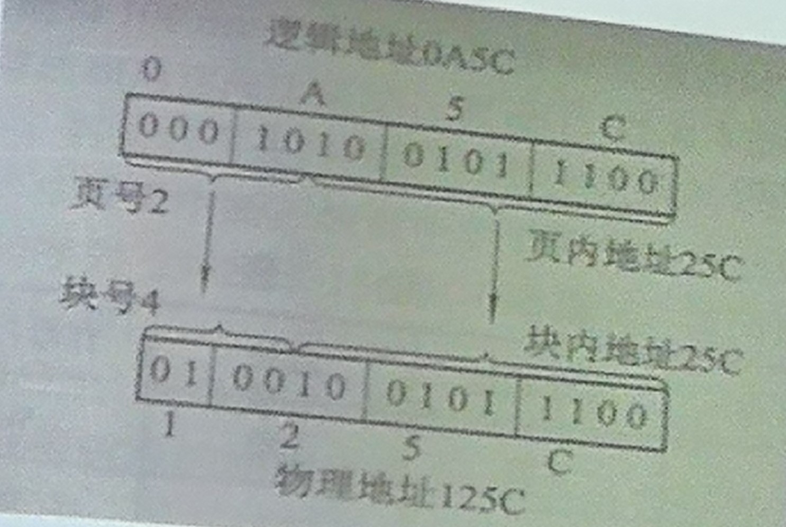
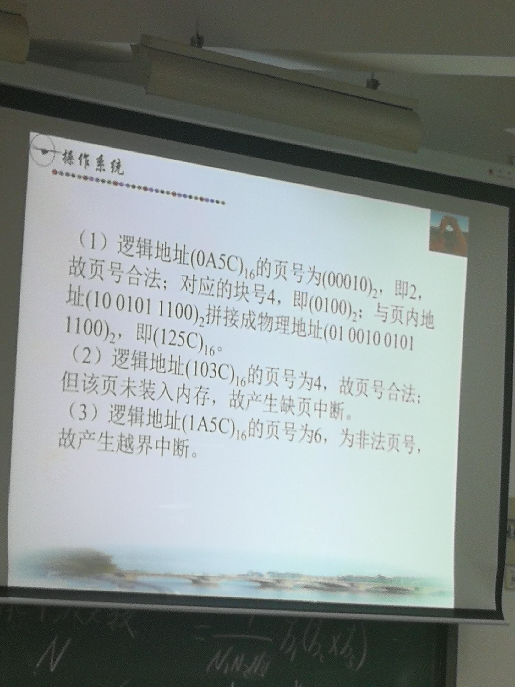
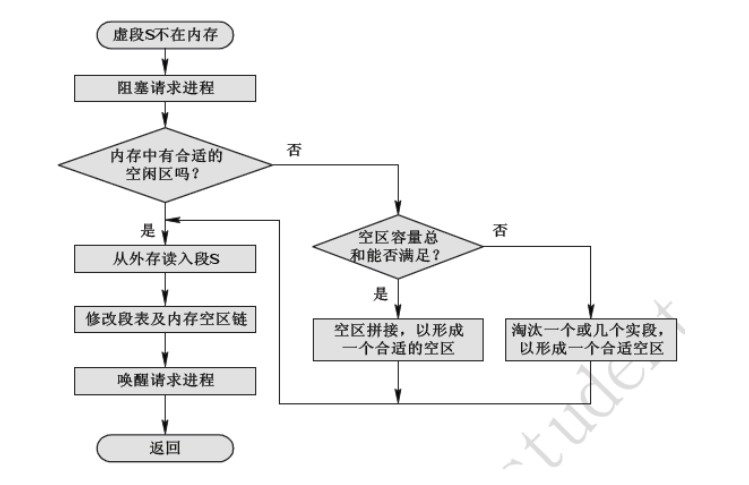
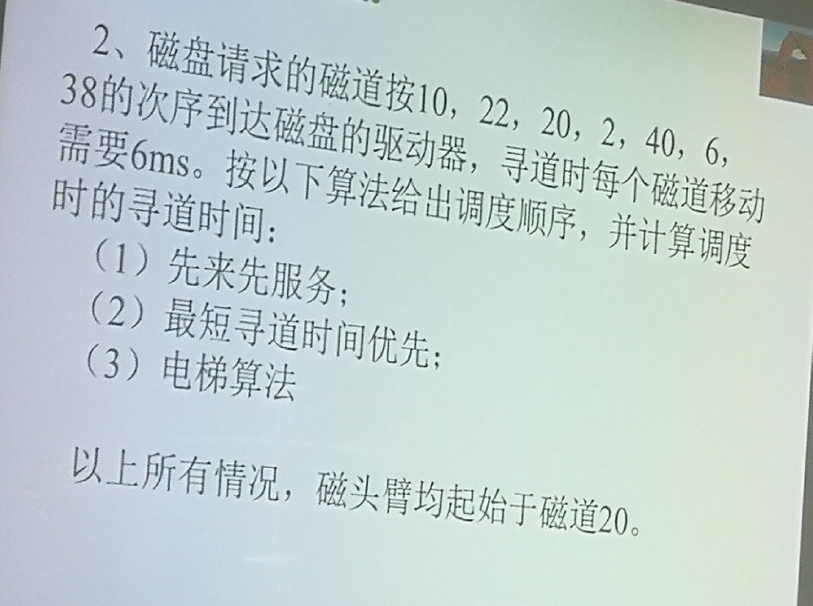
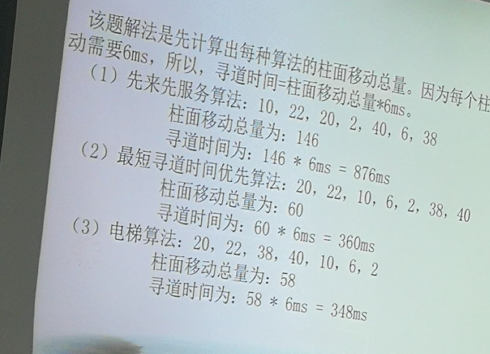

概要
第一章 操作系统引论（缺失）
- 分时实时系统比较
- 操作系统特征和功能
- 微内核系统
第二章 进程的描述与控制
- 了解前趋图进程的基本概念（题解p17）和应用；
- 理解程序执行，并发执行的概念、特点，以及并发执行的条件；题解p17
- 熟悉进程的基本概念、特征、pcb、进程实体、进程状态及其转换，熟悉进程与程序的关系；
- 了解线程的基本概念，线程的调度管理，以及与进程的关系；
- 了解进程同步和线程通信的基本概念；
- 了解进程通信的基本类型、特点和要求；
- 理解临界资源、临界区，以及同步准则等概念的基本含义，具体要求和进本应用；
- 了解常见的信号量机制，理解其基本原理和要求，能正确选用他们解决实际应用问题；
第三章 处理机调度与死锁
- 了解处理机调度的基本概念及调度准则，掌握低级调度的主要功能；
- 掌握处理机调度的基本算法，及其应用；
- 掌握实时系统的调度算法，及其应用；
- 理解死锁的基本概念，死锁产生的原因和必要条件，以及处理死锁的基本方法，死锁定理；
- 了解预防死锁的基本方法，掌握银行家算法及安全性算法；
第四章 存储器管理
- 了解程序装入和链接的基本过程；
- 理解存储器的层次结构；
- 了解内存分配的概念，及常用分区分配方式；
- 理解页式、段式、段页式管理的基本原理和方法，掌握页表、段表和快表啊、掌握分页与分段的区别；
- 掌握地址变换机构的工作机制，掌握逻辑地址到物理地址的映射过程；
第五章 虚拟存储器
- 理解常规存储器的特征;
- 理解虚拟存储器的基本概念\特征以及实现技术;
- 掌握常用页面置换法.
第六章 输入输出系统
- 了解I/O系统的基本功能与结构,及常用控制方法;
- 掌握中断处理程序和设备驱动程序的功能与工作过程,理解设备独立性引入的原因和实现要求;
- 了解缓冲的基本概念,引入原因及实现方法;
- 理解设备分配及处理的基本要求;
- 掌握假脱机SPOOLing系统的组成,打印机工作原理;
- 理解磁盘调度方式,掌握常用磁盘调度算法.
重点课后题(1-3章)
第一章
10.试从交互性、及时性以及可靠性方面将分时系统与实时系统进行比较
1）交互性：分时系统是一种通用系统，主要用于运行终端用户程序，因而它具有较强的交互能力；而实时系统虽然也有交互能力，但这里人与系统的交互仅限于访问系统中某些特定的专用服务程序，其交互能力不及前者
2）及时性：实时信息系统对及时性的要求与分时系统类似，都是以人所能接受的等待时间来确定；而实时控制系统的及时性则是以控制对象所要求的开始截止时间和完成截止时间来确定的，一般为秒级到毫秒级。
3）可靠性：分时系统虽然也要求系统可靠，但相比之下，实时系统对系统的可靠性要求要比分时系统对系统的可靠性要求高
11.OS有哪几大特征？其最基本的特征是什么？
井发性、共享性,虚拟性和异步性四个基本特征; 最基本的特征是并发性。
21.微内核操作系统有哪些优点？它为何能有这些优点？
1）提高了系统的可扩展性
2）增强了系统的可靠性
3）可移植性强
4）提供了对分布式系统的支持
5）融入了面向对象技术
原因：微内核os结构是建立在模块化，层次化结构基础上的，并且采用了客户/服务器模式和面对对象的程序设计技术。
第二章
6.进程与程序的主要区别和关系
1）程序是指令的集合，本身没有任何运行的含义，是一个静态概念；而进程是程序在处理机上的一次执行过程，是一个动态概念。
2）程序的存在是永久的；而进程是有生命周期的，它因创建而产生，因调度而执行，因缺少资源而暂停，因撤消而消亡。
3）程序仅是指令的有序集合；而进程则由程序段、数据段、进程控制块组成。
4）进程与程序之间不是一一对应的，即同一程序可同时运行于若干个不同的数据集合上，它将属于不同的进程：而一个进程也可以执行多个程序。
10.pcb的作用是什么为什么说pcb是进程存在的唯一标志
进程控制块是操作系统用来描述和管理进城的数据结构，其作用是使一个在多道程序环境下，不能独立运行的程序，成为一个能独立运行的基本单位，即一个能与其他进程并发执行的进程。
在创建进程时，系统将为他配置一个PCB，在进程调度时，系统将根据PCB的状态和优先级等信息来选择新进程，然后将老进程的现场信息保存到它的PCB中，再根据 新进程PCB中所保存的处理机状态信息来恢复运行的现场；执行中的进程，如果需要访问文件或者需要与合作进程实现同步或通信，也都需要访问PCB；当进程因某种原因而暂停执行时，也必须将断点的现场信息保存到它的PCB中：当进程结束时，系统将回收它的PCB，可见，在进程的整个生命期中，系统总是通过其PCB对进程进行控和管理，亦即，系统是根据其PCB而不是任何别的什么而感知到进程的存在，所以说，PCB是进程存在的唯一标志。
21.试从调度性、并发性、拥有资源、独立性、系统开销、及对多处理机的支持等方面，对进程和线程进行比较。
1）调度性。在传统的操作系统中，拥有资源的基本单位、独立调度和分派的基本单位都是进程。而在引入线程的OS中，则是把线程作为调度和分配的基本的单位，进程只是拥有资源的基本单位，而不再是调度和分派的基本单位。
2）并发性。在引入线程的OS中，不仅进程间可以并发执行，而且在一个进程内的多个线程间，也可以并发执行，因而比传统的OS具有更好的并发行。
3）拥有资源。在这两种OS中，拥有资源的基本单位都是进程。线程除了一点在在运行中必不可少的资源（如线程控制块、程序计数器、一组寄存器值和堆栈）外，本身基本不拥有系统资源，但它可共享其隶属的进程的资源。
4）独立性。每个进程都能独立地申请资源和独立的运行；但同一进程的多个线程则共享进程的内存地址空间和其他资源，它们之间的独立性比进程之间的独立性要低。
5）开销。由于创建和撤消进程时，系统都要为之分配和回收资源，如内存空间等。进程切换时所要保存和设置的现场信息也要明显地多于线程，因此，OS在创建、撤销和切换进程时
所付出的开销显著大于线程。另外由于隶属于同一个进程的多个线程共享同一地址空间和打开文件，从而使它们之间的同步和通信的实现也变得更为容易。
6）支持多处理机系统。传统的进程，只能运行在一个处理机上；多线程的进程，则可以将进程中的多个线程分配到多个处理机上，从而获得更好的并发执行效果。
补充
1.进程的三种基本状态
就绪状态、执行状态、阻塞状态。
2.临界区、临界资源定义
临界资源：一段时间内只允许一个进程访问。
临界区：进程中访问临界资源的那段代码称为临界区
3.同步准则
空闲让进、忙则等待、有限等待、让权等待
指导书p41 例41 p50 例20
第三章
7.试说明低级调度的主要功能
1）保存处理机的现场信息
2）按某种算法选取进程
3）把处理机分配给进程
12.试比较FCFS和SPF两种进程调度算法
相同点：两种调度算法都可以用于作业调度和进程调度
不同点：FCFS调度算法每次都从后备队列中选择一个或多个最先进入该队列的作业，将他们调入内存、分配资源、创建进程、插入到就绪队列。该算法有利于长作业/进程，不利于短作业/进程。SPF算法每次调度都从后备队列中选择一个或若干个估计运行时间最短的作业，调入内存中运行。该算法有利于短作业/进程，不利于长作业/进程
15.为什么说多级反馈队列调度算法能较好地满足各方面用户的需求？
1）终端型作业用户提交的作业大多属于较小的交互型作业，系统只要提交这些作业在第一队列规定的时间片内完成，终端作业用户就会感到满足。
2）短批处理作业用户，开始时像终端型作业一样，如果在第一队列中执行一个时间片段即可完成，便可获得与终端作业一样的响应时间。对于稍长作业，通常只需在第二和第三队列各执行一时间片即可完成，其周转时间仍然较短。
3）长批处理作业，他将依次在第1，2，。。。，n个队列中运行，然后再按轮转方式运行，用户不必担心其长期作业得不到处理。所以，多级反馈队列调度算法能满足更多用户需求。
27.何谓死锁？产生死锁的原因和必要条件是什么？
定义：如果一组进程中的每一个进程都在等待仅由该组进程中的其它进程才能引发的事件，那么该组进程是死锁的
产生原因：1）竞争资源。2）进程推进顺序非法。
必要条件：1）互斥条件。2）请求和保持条件。3）不可抢占条件。4）循环等待条件。
30.银行家算法的例子中，如果P0发出的请求向量由Request（0，2，0）改为Request（0，1，0），问系统可否将资源分配给它？
能分配
request（0，1，0）≤need（7，4，3）；
request（0，1，0）≤available（2，3，0）；
系统暂时假定可为P0分配资源，并修改有关数据，如下所示：
| allocation | need | available | |
|---|---|---|---|
| A B C | A B C | A B C | |
| p0 | 0 2 0 | 7 3 3 | 2 2 0 |
| p1 | 3 0 2 | 0 2 0 | |
| p2 | 3 0 2 | 6 0 0 | |
| p3 | 2 1 1 | 0 1 1 | |
| p4 | 0 2 2 | 4 3 1 |
利用安全性算法检查
| work | need | allocation | work+allocation | finish | |
|---|---|---|---|---|---|
| A B C | A B C | A B C | A B C | ||
| p1 | 2 2 0 | 0 2 0 | 3 0 2 | 5 2 2 | true |
| p3 | 5 2 2 | 0 1 1 | 2 1 1 | 7 3 3 | true |
| p0 | 7 3 3 | 7 3 3 | 0 2 0 | 7 5 3 | true |
| p2 | 7 5 3 | 6 0 0 | 3 0 2 | 10 5 5 | true |
| p4 | 10 5 5 | 4 3 1 | 0 0 2 | 10 5 7 | true |
存在安全序列{p1,p3,p0,p2,p4}所以能分配
31.在银行家算法中，若出现下述资源分配情况，试问：
| process | allocation | need | available |
|---|---|---|---|
| p0 | 0 0 3 2 | 0 0 1 2 | 1 6 2 2 |
| p1 | 1 0 0 0 | 1 7 5 0 | |
| p2 | 1 3 5 4 | 2 3 5 6 | |
| p3 | 0 3 3 2 | 0 6 5 2 | |
| p4 | 0 0 1 4 | 0 6 5 6 |
（1）该状态是否安全？
| work | need | allocation | work+allocation | finish | |
|---|---|---|---|---|---|
| p0 | 1 6 2 2 | 0 0 1 2 | 0 0 3 2 | 1 6 5 4 | true |
| p3 | 1 6 5 4 | 0 6 5 2 | 0 3 3 2 | 1 9 8 6 | true |
| p4 | 1 9 8 6 | 0 6 5 6 | 0 0 1 4 | 1 9 9 10 | true |
| p1 | 1 9 9 10 | 1 7 5 0 | 1 0 0 0 | 2 9 9 0 | true |
| p2 | 2 9 9 10 | 2 3 5 6 | 1 3 5 4 | 3 12 14 14 | true |
存在安全序列{p0,p3,p4,p1,p2}所以安全
（2）p2发出请求向量Request（1，2，2，2）后，系统能否将资源分配给它？
系统按银行家算法进行检查：
①request2（1，2，2，2）≤need2（2，3，5，6）
②request2（1，2，2，2）≤available（1，6，2，2）
③系统先假定可为P2分配资源并修改
available = （0，4，0，0）
allocation2 = （2，5，7，6）
need2 = （1，1，3，4）
④进行安全性检查：此时对所有的进程need≤available都不成立故系统进入不安全状态。
因此不能分配给P2
重点课后题(4-6章)
第四章
12.分区存储管理中常用到哪些分配策略？比较它们的优缺点。p130
分区存储管理中的常用分配策略：首次适应算法、循环首次适应算法、最佳适应算法、最坏适应算法。
- 首次适应算法：保留了高址部分的大空闲区，有利于后来的大型作业分配；低址部分不断被划分，留下许多难以利用的小空闲区，每次查找都从低址开始增加了系统开销。
- 循环首次适应算法：内存空闲分区分布均匀，减少了查找系统开销；缺乏大空闲分区，导致不能装入大型作业。
- 最佳适应算法：每次分配给文件的都是最适合该文件大小的分区，内存中留下许多难以利用的小空闲区。
- 最坏适应算法：剩下空闲区不太小，产生碎片几率小，对中小型文件分配分区操作有利；存储器中缺乏大空闲区，对大型文件分区分配不利。
14.对文件区管理的目标和对对换空间管理的目标有何不同？p136
1）对文件区管理的主要目标
文件区占用磁盘空间的大部分，用于存放各类文件。由于通常的文件都是较长时间的驻留在外存上，对他访问的频率是较低的，故对文件区管理的主要目标是提高文件存储空间的利用率，然后才是提高对文件的访问速度。因此，对文件的管理采取离散分配方式。
2）对对换空间的管理的主要目标
对换空间只占用磁盘空间的小部分，用于存放从内存换出的进程。由于这些进程在对换区驻留的时间是短暂的，而对换操作的频率却较高，故对对换空间的管理的主要目标是提高进程换入和换出的速度，然后才是提高文件存储空间的利用率。为此，对对换空间的管理采取连续分配方式，较少考虑外存中的碎片问题。
17.基于离散分配时所用的基本单位不同，可将离散区分配为哪几种？p138
1）分页存储管理方式
在该方式中，将用户程序的地址空间分为若干个固定大小的区域，称为“页”或“页面”。
2）分段存储管理方式
它把用户程序的地址空间分为若干个大小不同的段，每段可定义一组相对完整的信息。在存储器分配时，以段为单位。
3）段页式存储管理方式。
这是分页和分段两种存储管理方式相结合的产物。它同时具有两者的优点，是目前应用较广泛的一种存储管理方式。
19.什么是页表？页表的作用是什么？p139
在分页系统中，允许将进程的各个页离散的存储在内存的任一物理块中，为保证进程仍然能正确的运行，既能在内存中找到每个页面所对应的物理块，系统又为每个进程建立了一张页面映像表，简称页表。
页表的作用是实现从页号到物理块号的地址映射。
21.在分页系统中是如何实现地址变换的？p140
首先，进程运行时从进程的PCB中把页表始址和页表长度放入页表寄存器中，当进程要访问某个逻辑地址中的数据的时候，分页地址变换机构会自动的将有效地址(逻辑地址)分为页号和页内地址。讲页号和页表寄存器中的页表长度相比，如果页号比较大则说明访问越界，抛出中断。否则利用页号、页表始址和页表项长度计算出相应的页表中的位置(因为页表在内存中，所以需要计算对应的地址，而不是想象中的直接匹配页号，相当于“起点+单位数x单位长度”)，从而得到物理块号。把物理块号和页内地址同时送入物理地址寄存器中，相结合得到物理地址。
22.具有快表时是如何实现地址变换的？p141
首先，以前转换过程中查找过的页表项会被记录在快表之中。在每次需要访问逻辑地址中的数据的时候，都会根据页号先到快表中查看有没有对应的匹配项，如果有就直接得到相应的物理块号而不需要进过利用始址、页号和页表项长度计算后去内存中查表。得到物理块号后依然是送到物理地址寄存器中和页内地址结合形成最后的物理地址。
23.较详细地说明引入分段存储管理是为了满足用户哪几方面的需要。p145\146
1)方便编程
通常，用户把自己的作业按照逻辑关系划分为若干个段，每个段都是从0开始编址，并有自己的名字和长度。因此，希望要访问的逻辑地址是由段名(段号)和段内偏移量(段内地址)决定的。
2)信息共享
在实现对程序和数据的共享时，是以信息的逻辑单位为基础的。比如，共享 某个例程和函数。分页系统中的“页”只是存放信息的物理单位(块)，并无完整的 意义，不便于实现共享；然而段却是信息的逻辑单位。由此可知，为了实现段的 共享，希望存储管理能与用户程序分段的组织方式相适应。
3)信息保护
信息保护同样是对信息的逻辑单位进行保护，因此，分段管理方式能更有效 和方便地实现信息保护功能。
4)动态增长在实际应用中，往往有些段，特别是数据段，在使用过程中会不断地增长， 而事先又无法确切地知道数据段会增长到多大。前述的其它几种存储管理方式， 都难以应付这种动态增长的情况，而分段存储管理方式却能较好地解决这一问题
5)动态链接
动态链接是指在作业运行之前，并不把几个目标程序段链接起来。要运行时， 先将主程序所对应的目标程序装入内存并启动运行，当运行过程中又需要调用某段时，才将该段(目标程序)调入内存并进行链接。可见，动态链接也要求以段作为管理的单位。
26.分页和分段存储管理有何区别？p148
(1)
a 页是信息的物理单位。采用分页存储管理方式是为实现离散分配方式，以消减内存的外零头，提高内存的利用率。仅仅只是系统管理上的需要。
b 分段存储管理方式中的段则是信息的逻辑单位。分段的目的主要在于能更好地满足用户的需要。
(2)
a 页的大小固定且由系统决定，直接由硬件实现，因而在每个系统中只能有一种大小的页面。
b 段的长度不固定，决定于用户所编写的程序，通常由编译程序在对源程序进行编译时，根据信息的性质来划分。
(3)
a 分页的用户程序地址空间是一维的，属于单一的线性地址空间，程序员只需利用一个记忆符即可表示一个地址。
b 分段系统中用户程序的地址空间是二维的，程序员在标识一个地址时，既需给出段名又需给出段内地址。
27.试全面比较连续分配和离散分配方式。
1)连续分配是指为一个用户程序分配一个连续的地址空间，包括单一和分区两种分配方式。单一方式将内存分为系统区和用户区，最简单，只用于单用户单任务操作系统；分区方式分固定和动态分区。
2）离散分配方式为分页、分段和段页式存储管理。分页式存储管理旨在提高内存利用率，分段式存储管辂旨在满足用户的需要，段页式存储管理则将两者结合起来，具有分段系统便于实现、可共享、易于保护和和动态连接等优点，又能像分页系统很好解决外部碎片及为各段可离散分配内存等问题，是比较有效的存储管理方式；
| 技术性能 | 连续分配 | 离散分配 |
|---|---|---|
| 大批量数据的存取速度 | 较快 | 较慢 |
| 机制的复杂性 | 较简单 | 较复杂 |
| 内存碎片 | 较大 | 较小 |
| 实现虚拟技术 | 较难 | 较易 |
| 实现动态链接 | 较难 | 较易 |
补充
指导书 p102 例13 p103 例15
例1
某虚拟存储器的用户空间共有32个页面，每页1KB，主存16KB。假定某时刻系统为用户的第0、1、2、3页分配的物理块号为5、10、4、7，而该用户作业的长度为6页。试将十六进制的虚拟地址0A5C、103C、1A5C转换成物理地址。
答：由题可知，该系统的逻辑地址有15位，其中高五位为页号，低十位为页内地址；物理地址有14位，其中高4位为块号，低十位为快内地址。
逻辑地址是十六进制，需转换成二进制以直接获取页号和页内地址，再完成地址转换。


第五章
1.常规存储器管理方式具有哪两大特征?它对系统性能有何影响?p153
1）一次性，是指作业必须一次性地全部装入内存后方能开始运行。
影响：导致大作业无法在小内存中运行，以及无法进一步提高系统的多道程序度。直接限制了对处理机的利用率和系统的吞吐量的提高。
2）驻留性，是指作业被装入内存后，整个作业都一直驻留在内存中，其中任何部分都不会被换出，直至作业运行结束。
影响：尽管运行中的进程会因I/O等原因而被阻塞，可能处于长期等待状态，或者有的程序模块在运行过一次后就不再运行了，他们都仍将留在内存中，继续占用宝贵的内存资源。
3.虚拟存储器有哪些特征？其中最本质的特征是什么？p155
1）多次性。（相对于传统存储器的一次性）
2）对换性。（相对于传统存储器的常驻性）
3）虚拟性。（指能从逻辑上扩充内存容量，使用户所看到的内存容量远大于实际内存容量）
（ 4）离散性。 ）
最本质特征是虚拟性
8.试说明请求分页系统中的地址变换过程。p158、159
首先检索快表，试图从中找出要访问的页。若找到便修改页表项中的访问位，供置换算法选换出页面时参考。对于些指令，还需将修改位置为“1”，表示该页在调入内存后已被修改。然后利用页表项中给出的物理块号和页内地址形成物理地址。
如果在快表中未找到该页的页表项，则应到内存中去查页表，再从找到的页表项中的状态位P来了解该页是否已调入内存。若该页已调入内存，这时应将该页的页表项写入块表。当快表已满时，则应先调出按某种算法所确定的页的页表项，然后再写入该页的页表项；若该页尚未调入内存，这时应产生缺页中断，请求OS从外存把该页调入内存。
12.在请求分页系统中，常采用哪几种页面置换方法？p162-168
最佳置换算法（理论上的算法）、先进先出（FIFO）页面置换算法、LRU（最近最久未使用）置换算法、最近最少(LFU)使用置换算法、Clock置换算法、页面缓冲算法。
13.在一个请求分页系统中，采用FIFO页面置换算法时，
假如作业的页面走向为4、3、2、1、4、3、5、4、3、2、1、5，当分配给该作业的物理块数M分别为3和4时，试计算在访问过程中所发生的缺页次数和缺页率，并比较所得结果。参考p163
略
15.试说明改进型Clock置换算法的基本原理p167
在改进型Clock算法中，除需考虑页面的使用情况外，还需增加一个因素——置换代价。这样，选择页面换出时，既要是未使用过的页面，又要是未被修改过的页面。
18.在请求分页系统中,产生”抖动”的原因是什么?p170
发生”抖动”的根本原因是,同时在系统中运行的进程太多,由此分配给每一个进程的物理块太少,不能满足进程正常运行的基本要求,致使每个进程在运行时,频繁的出现缺页,必须请求系统将所缺之页调入内存。
20.当前可以利用哪几种方法来防止“抖动”？p172
1）采取局部置换策略
2）把工作集算法融入到处理机调度中
3）利用“L=S”准则调节缺页率
4）选择暂停的进程
24.说明请求分段系统中的缺页中断处理过程。p173

26.如何实现共享分段的分配和回收？p175
1）共享段的分配
在为共享段分配内存时，对第一个请求使用该共享段的进程，由系统为该共享段分配一物理区，再把共享段调入该区，同时将该区的实址填入请求进程的段表的相应项中，还须在共享表中增加一表项，填写请求使用该共享段的进程名、段号和存取控制相关的数据，把count设置为1.当有其他进程需要调用该共享段时，由于该共享段已被调入内存，故此时无需再为该段分配内存，而只需在调用进程的段表中增加一表项，填写该共享段的段表中增加一个表项，填上调用进程的进程名、该共享段在本进程中的段号、存取控制等，再执行count=count+1操作，以表明有两个进程共享该段。以后，凡有进程需要访问此共享段时，都按上述方式
在共享段的段表中增加一个表项。
2）共享段的回收
当共享此段的某进程不再需要该段时，应将该段释放，包括撤销在该进程段表中共享段所对应的表项，以及执行count::=count-1操作。若结果为0，则需由系统回收该共享段的物理内存，以及取消在共享段表中该段所对应的表项，表明此时已没有进程使用该段。否则（减1结果不为0），只是取消调用者进程在共享段表中的有关记录。
第六章
2.简要说明I/O软件的四个层次的基本功能.p180
1) 用户层I/O软件，实现与用户交互的接口，用户可直接调用该层所提供的、与IO操作有关的库函数对设备进行操作。
2) 设备独立性软件，用于实现用户程序与设备驱动器的统接口、设备命名、设备的保护以及设备的分配与释放等，同时为设备管理和数据传送提供必要的存储空间。
3) 设备驱动程序，与硬件直接相关，用于具体实现系统对设备发出的操作指令，驱动I/O设备工作的驱动程序。
4)中断处理程序，用于保存被中断进程的CPU环境，转入相应的中断处理程序进行处理，处理完毕再恢复被中断进程的现场后，返回到被中断的进程。
8.为什么说中断是OS赖以生存的基础?p189
1)进程之间的切换是通过中断来完成的，它是多道程序得以实现的基础，没有中断，就不可能实现多道程序；
2)中断也是设备管理的基础，为了提高处理机的利用率和实现CPU和I\O设备并行执行，也需要有中断。
12.是说明设备驱动程序具有哪些特点.p193
1)是请求I/O进程与设备控制器间的一个通信程序;
2)驱动程序与I/O设备的特性紧密相关;
3)驱动程序与I/O控制方式紧密相关;
4)驱动程序与硬件紧密相关,部分程序用汇编语言书写,基本部分往往固化在ROM中.
13.设备驱动程序通常要完成哪些工作?p192
1)将接收到的抽象要求转为具体要求;
2)检查用户I/O请求合法性,了解I/O设备状态,传递有关参数,设置设备工作方式;
3)发出I/O命令,启动分配到I/O设备,完成指定I/O操作;
4)及时响应由控制器或通道发来的中断请求,根据中断类型调用相应中断处理程序处理;
5)对于有通道的计算机,驱动程序还应该根据用户I/O请求自动构成通道程序.
14.简要说明设备驱动程序的处理过程可分为几步.p193
1)将抽象要求转换为具体要求.
2)对服务请求进行校验.
3)检查设备的状态.
4)传送必要的参数.
5)启动I/O设备.
16.有哪几种I/O控制方式?各适用于何种场合?p195
1)使用轮询的可编程I/O方式
早期的计算机系统中由于无中断机构，处理机对I/O设备的控制采取程序I/O方式，或称忙-等待方式。在程序I/O方式中，由于CPU的高速性和I/0设备的低速性，致使CPU的绝大部分时间都处于等待I/0设备完成数据I/O的循环测试中，造成对CPU的极大浪费，现在这种方式已基本被淘汰。
2)使用中断的可编程I/O方式
即当某进程要启动某个I/O设备工作时，便由CPU向相应的设备控制器发出一条I/O命令，然后立即返回继续执行原来的任务。设备控制器于是按照该命令的要求去控制指定I/O设备。此时，CPU与I/O设备并行操作。中断驱动方式可以成百上千倍地提高CPU的利用率，它适用于具有中断机构的计算机系统。
3)直接存储器访问方式
DMA方式较之中断驱动方式，又是成百上千倍地减少了CPU对I/O设备的干预，进一步提高了CPU 与I/O 设备的并行操作程度，它适用于具有DMA 控制器的计算机系统中。
4)I/P通道控制方式
这种控制方式可实现CPU 、通道和I/O 设备三者的并行操作，从而更有效地提高整个系统的资源利用率，它适用于具有通道程序的计算机系统。
17.试说明DMA的工作流程.p197
1）CPU需要访问外存时便发送。一条访问命令给DMA的命令寄存器CR、一个内存地址码给DMA的内存地址寄存器MAR、本次要传送的字节数给DMA的数据计数器DC、外存地址给DMA的I/O控制逻辑。
2）CPU启动DMA控制器后转向其他处理。
3）DMA控制器负责控制数据在内存与外设之间传送。每传送一个字节就需挪用一个内存周期，按MAR从内存读出或写入内存一个字节，修改MAR和计算器DC。
4）当DC修改为0时，表示传送结束，由DMA向CPU发出中断请求。
22.在实现后台打印时,SPOOLing系统应为请求I/O的进程提供哪些服务?p208
1）由输出进程在输出井中为之申请一个空闲磁盘块区，并将要打印的数据填入其中； 2）输出进程为用户进程申请空白的用户请求打印表，并将用户的打印要求填入其中，并将该表挂到请求打印队列；
3）—旦打印机空闲，输出进程便从请求打印队列的队首取出一张请求打印表，根据表中要求将要打印的数据从输出井传送到内存缓冲区，再由打印机打印。
23.假脱机系统向用户提供共享打印机的基本思想是什么?p208
对每个用户而言,系统并非即时执行其程序输出数据的真实打印操作,而只是即时将数据输出到缓冲区,这时的数据并未真正被打印,只是让用户感觉系统已为他打印;
真正的打印操作,是在打印机空闲且该打印任务在等待队列中已排到队首时进行的;而且,打印操作本身也是利用cpu的一个时间片,没有使用专门的外围机;
以上过程是对用户屏蔽的,用户是不可见的.
24.引入缓冲的主要原因是什么?p209
1)缓和CPU与I/O设备间速度不匹配的矛盾.
2)减少对CPU的中断率,放宽对CPU中断响应时间的限制.
3)解决数据粒度不匹配的问题.
4)提高CPU和I/O设备间的并行性.
30.磁盘访问时间由哪几部分组成?每部分时间应如何计算?p216
1.寻道时间，启动磁臂的时间s与磁头移动n条磁道所花费的时间之和
t=mxn+s（一般磁盘，m=0.2，高速磁盘，m<=0.1）
2.旋转延迟时间，是指定扇区移动到磁头下面所经历的时间
3.传输时间 ，指把数据从磁盘读出或向磁盘写入数据所经历的时间
若每次读/写的字节数为b，磁盘每秒钟的转速为r，一条磁道上的字节数为N
t=b/(rN)
31.目前常用的磁盘调度算法有哪几种?每种算法优先考虑的问题是什么?
(1)先来先服务(FCFS，First-Come First-Served)
此算法根据进程请求访问磁盘的先后次序进行调度。
(2)最短寻道时间优先(SSTF ，ShortestSeekTimeFirst)
该算法选择这样的进程，其要求访问的磁道与当前磁头所在的磁道距离最近，以使每次的寻道时间最短，但这种调度算法却不能保证平均寻道时间最短。
(3)扫描(SCAN)算法
SCAN算法不仅考虑到欲访问的磁道与当前磁道的距离，更优先考虑的是磁头的当前移动方向。
(4)循环扫描(CSCAN)算法
CSCAN算法规定磁头单向移动，避免了扫描算法导致的某些进程磁盘请求的严重延迟。
(5) N-Step-SCAN和FSCAN调度算法
1) N-Step-SCAN算法。为克服前述SSTF、SCAN、CSCAN等调度算法都可能出现的磁臂停留在某处不动的情况即磁臂粘着现象，将磁盘请求队列分成若干个长度为N的子队列，按先来先服务算法依次处理这些子队列，而各队列分别以扫描算法进行处理。
2) FSCAN算法
FSCAN算法实质上是N步SCAN算法的简化。它只将磁盘请求访问队列分成两个子队列。一是当前所有请求磁盘I/O的进程形成的队列，由磁盘调度按SCAN算法进行处理。另一个队列则是在 扫描期间，新出现的所有请求磁盘I/O进程的队列，放入另一等待处理的请求队列。这样，所有的新请求都将被推迟到下一次扫描时处理。
补充

